11/11 passed · 0.92s
test_facet.jl 11/11 PASS
| id | label | got | want | Δ vs tol (kind) | |
|---|---|---|---|---|---|
| ✓ | t402 | occursin("system.g = 0.5", html) [by = param facet] @ test_facet.jl:22 | 1.0 | 1.0 | 0.0 vs 0.5 (abs) |
| ✓ | t403 | occursin("system.g = 1.0", html) [by = param facet] @ test_facet.jl:23 | 1.0 | 1.0 | 0.0 vs 0.5 (abs) |
| ✓ | t404 | first(findfirst("system.g = 0.5", html)) < first(findfirst("system.g = 1.0", html)) [by = param facet] @ test_facet.jl:24 | 1.0 | 1.0 | 0.0 vs 0.5 (abs) |
| ✓ | t405 | count("class=\"facet\"", html) == 2 [by = param facet] @ test_facet.jl:26 | 1.0 | 1.0 | 0.0 vs 0.5 (abs) |
| ✓ | t406 | occursin("system.g = 0.5", html) [by = param facet] @ test_facet.jl:38 | 1.0 | 1.0 | 0.0 vs 0.5 (abs) |
| ✓ | t407 | occursin("system.g: (unset)", html) [by = param facet] @ test_facet.jl:39 | 1.0 | 1.0 | 0.0 vs 0.5 (abs) |
| ✓ | t408 | !(occursin("class=\"facet\"", html)) [by = param facet] @ test_facet.jl:51 | 1.0 | 1.0 | 0.0 vs 0.5 (abs) |
| ✓ | t409 | count("class=\"figgrid\"", html) == 1 [by = param facet] @ test_facet.jl:52 | 1.0 | 1.0 | 0.0 vs 0.5 (abs) |
| ✓ | t410 | p05 < p20 < phi [by = param facet] @ test_facet.jl:70 | 1.0 | 1.0 | 0.0 vs 0.5 (abs) |
| ✓ | t411 | first(findfirst("system.g = 0.5", html)) < first(findfirst("system.g = 1.0", html)) [by = param facet] @ test_facet.jl:82 | 1.0 | 1.0 | 0.0 vs 0.5 (abs) |
| ✓ | t412 | first(findfirst("Fig. 2", html)) < first(findfirst("Fig. 1", html)) [by = param facet] @ test_facet.jl:84 | 1.0 | 1.0 | 0.0 vs 0.5 (abs) |
 ⤓ download
⤓ download
occursin("system.g = 0.5", html) over the swept axis by. Dashed line = want; the shaded band is the tolerance; a red marker is a failed check.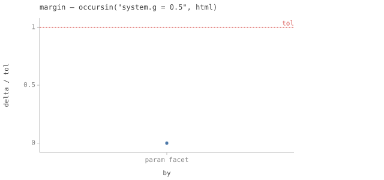
⤓ download{kind=link}
delta/tol of occursin("system.g = 0.5", html) over by; the dashed line at 1.0 is the pass/fail boundary.{kind=link}
occursin("system.g = 1.0", html) over the swept axis by. Dashed line = want; the shaded band is the tolerance; a red marker is a failed check.{kind=link}
delta/tol of occursin("system.g = 1.0", html) over by; the dashed line at 1.0 is the pass/fail boundary.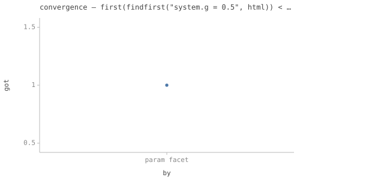
⤓ download{kind=link}
first(findfirst("system.g = 0.5", html)) < … over the swept axis by. Dashed line = want; the shaded band is the tolerance; a red marker is a failed check.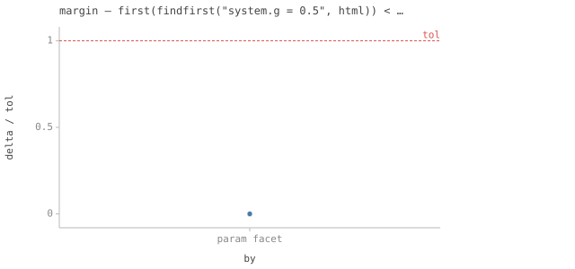
⤓ download{kind=link}
delta/tol of first(findfirst("system.g = 0.5", html)) < … over by; the dashed line at 1.0 is the pass/fail boundary.{kind=link}
count("class=\"facet\"", html) == 2 over the swept axis by. Dashed line = want; the shaded band is the tolerance; a red marker is a failed check.{kind=link}
delta/tol of count("class=\"facet\"", html) == 2 over by; the dashed line at 1.0 is the pass/fail boundary.{kind=link}
occursin("system.g: (unset)", html) over the swept axis by. Dashed line = want; the shaded band is the tolerance; a red marker is a failed check.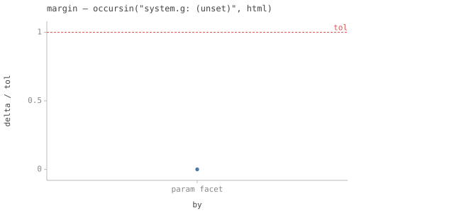
⤓ download{kind=link}
delta/tol of occursin("system.g: (unset)", html) over by; the dashed line at 1.0 is the pass/fail boundary.{kind=link}
!(occursin("class=\"facet\"", html)) over the swept axis by. Dashed line = want; the shaded band is the tolerance; a red marker is a failed check.{kind=link}
delta/tol of !(occursin("class=\"facet\"", html)) over by; the dashed line at 1.0 is the pass/fail boundary.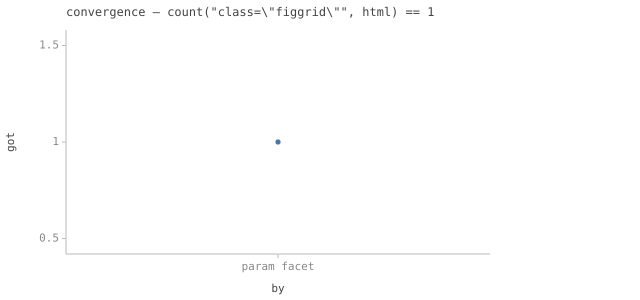
⤓ download{kind=link}
count("class=\"figgrid\"", html) == 1 over the swept axis by. Dashed line = want; the shaded band is the tolerance; a red marker is a failed check.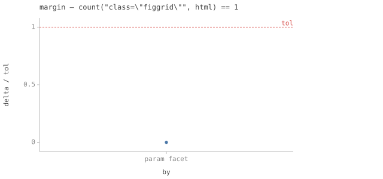
⤓ download{kind=link}
delta/tol of count("class=\"figgrid\"", html) == 1 over by; the dashed line at 1.0 is the pass/fail boundary.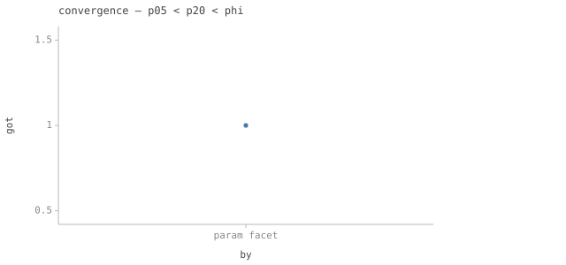
⤓ download{kind=link}
p05 < p20 < phi over the swept axis by. Dashed line = want; the shaded band is the tolerance; a red marker is a failed check.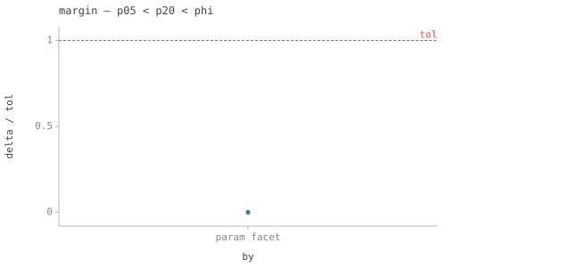
⤓ download{kind=link}
delta/tol of p05 < p20 < phi over by; the dashed line at 1.0 is the pass/fail boundary.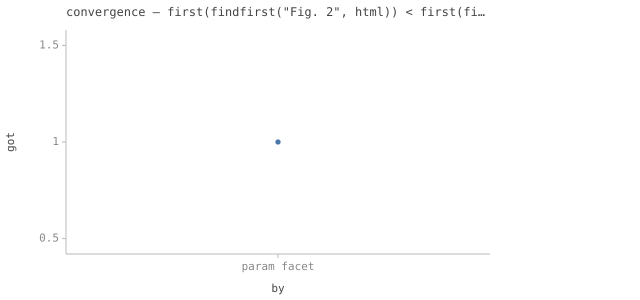
⤓ download{kind=link}
first(findfirst("Fig. 2", html)) < first(fi… over the swept axis by. Dashed line = want; the shaded band is the tolerance; a red marker is a failed check.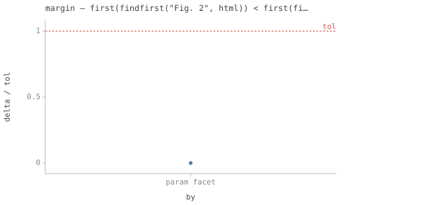
⤓ download{kind=link}
delta/tol of first(findfirst("Fig. 2", html)) < first(fi… over by; the dashed line at 1.0 is the pass/fail boundary.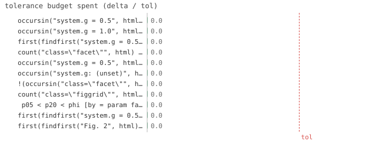
⤓ download{kind=link}